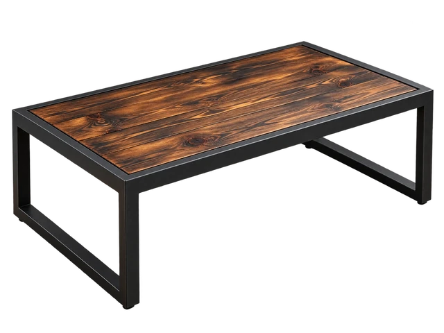
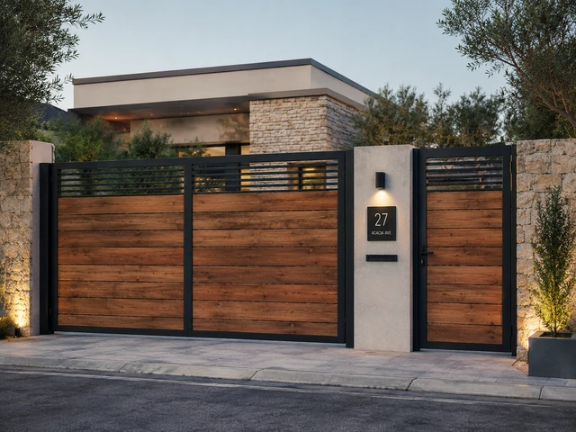

Mesas e consolas
Mesa de centro
Uma peça central para a sala, com estrutura metálica e tampo em madeira.
Aço e madeira · Por medida
Mobiliário industrial e soluções por medida que juntam a força do metal à personalidade da madeira.
Medidas, materiais e acabamentos definidos contigo.

Propostas de modelos para adaptar à tua casa. As imagens são ilustrativas; as medidas e os acabamentos finais são combinados no orçamento.
Uma peça central para a sala, com estrutura metálica e tampo em madeira.
Aço e madeira · Por medida

Consola com prateleira inferior e travamento cruzado.
Aço e madeira · Por medida
Três níveis para livros, objetos e peças de decoração.
Aço e madeira · Por medida

Uma proposta para a entrada da tua casa, com dimensões e acabamentos a combinar.
Pedir orçamento de um portãoRender ilustrativo · Projeto por medida
Tens uma referência, uma medida difícil ou uma ideia diferente? Conta-nos o que procuras.
Combinamos os detalhes contigo antes de avançar para o fabrico.
Envia o modelo de que gostas, uma fotografia ou um esboço pelo WhatsApp.
Combinamos medidas, materiais, acabamento, preço e prazo.
Depois de aprovada a proposta, avançamos com a preparação e o fabrico.
Combinamos as opções de levantamento, entrega ou montagem.
Se ainda tens alguma dúvida, fala connosco diretamente.
Perguntar pelo WhatsAppSim. Os modelos são pontos de partida. Partilha as medidas do espaço e as tuas preferências de materiais e cor para avaliarmos a adaptação.
O preço depende do modelo, dimensões, materiais e acabamento. Pede orçamento na peça de que gostas para combinarmos esses detalhes e prepararmos a proposta.
O nome do modelo ou uma imagem de referência, as medidas aproximadas e a localidade. Se ainda não tens todos os detalhes, podemos começar pela tua ideia.
O prazo de fabrico e as opções de levantamento, entrega ou montagem são combinados no orçamento, de acordo com a peça e a localidade.
Escolhe um modelo ou envia uma fotografia, um esboço e as medidas que já tens. Combinamos contigo a solução e preparamos o orçamento.